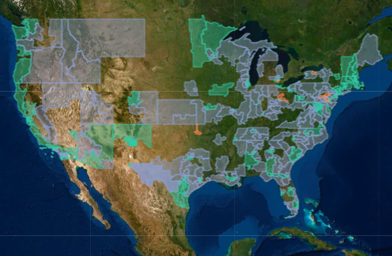

Upcoming Talk: 26 February 2020, 7:00-8:00 PM
The ICE-Silicon Valley Partnership: How Big Tech Advances an Incarceration and Deportation Regime
Jacinta Gonzalez, Mijente
Universitat Pompeu Fabra
Mercè Rodoreda Auditorium, Ciutadella Campus

Background Reading: Who's Behind ICE: Tech and Data Companies Fueling Deportations
Download Poster 1
Download Poster 2
Featured Map
Torn Apart: "a deep and radically new look at the territory and infrastructure of ICE’s financial regime in the USA."
Featured Documentary
Through the WallAn award-winning short documentary about a family separated by the US-Mexico border.
Directed by Tim Nackashi
Produced by Chelo Alvarez-Stehle and Tim Nackashi
Background: A wall apart: divided families meet at a single, tiny spot on the US-Mexico border